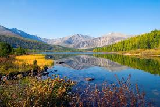
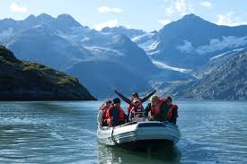

My Favourite Photos
Here is a collection of my favourite photography styles and shots:
- Nature & Landscapes
- Street Photography
- Portrait Photography
- Travel & Adventure
- Golden Hour Shots




Photography is a way of feeling, touching, and loving. Welcome to my personal portfolio — a collection of my favourite moments captured through my lens in Nairobi, Kenya and beyond.
Hi, I'm John Chris, a passionate photographer and website developer. I love capturing the beauty in everyday moments — from golden hour landscapes to street portraits.
Photography to me is more than a hobby — it's a way of seeing the world differently and sharing that vision with others.
Here is a collection of my favourite photography styles and shots:


Interested in working together or just love photography? Send me a message!